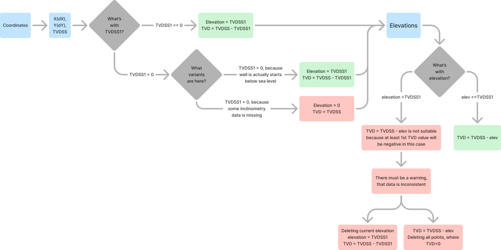
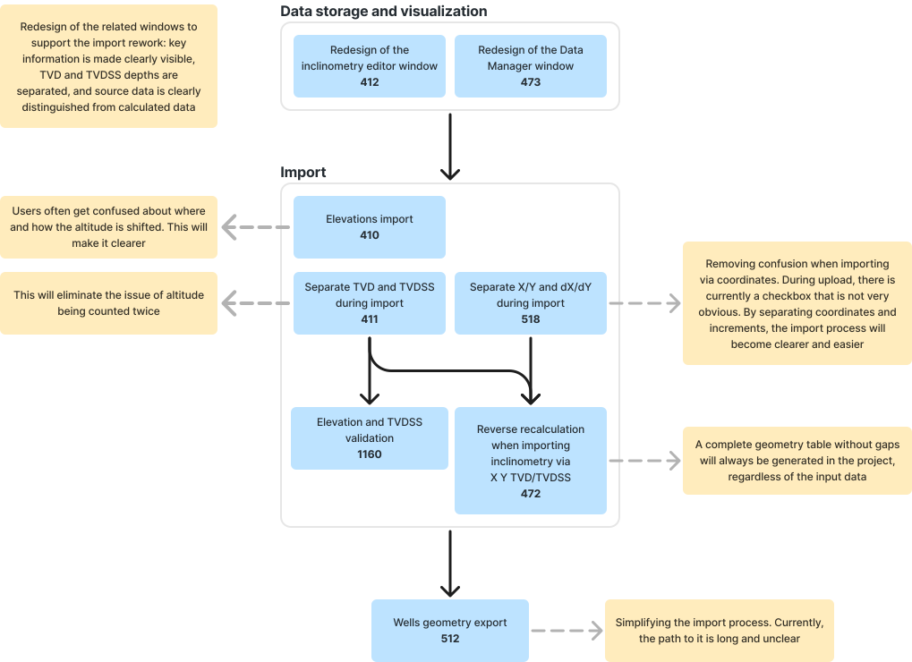

Redesigning a Data Import Workflow
I redesigned a high-risk import scenario in complex B2B software by analyzing recurring user mistakes, improving workflow logic, adding validation and warning scenarios, and delivering changes that made the import process safer and clearer for users.
The product is a complex B2B platform for loading, analyzing, and interpreting spatial geological data. A critical workflow required users to import well-related spatial data before they could continue working with it in the project.
The import step was important because incorrect data positioning could affect downstream analysis. Users needed the system to guide them through the import process and prevent configuration mistakes before they propagated into later workflows.
- Users sometimes imported data incorrectly because the import template was configured in the wrong way.
- Text labels and explanations were not clear enough for a high-risk import step.
- Recurring support requests showed that the problem was not isolated — it was one of the common reasons for questions at this workflow stage.
From repeated support requests to product decisions
Key redesign artifacts
Workflow map: before and after
Shows the difference between the original import flow, where problems were discovered after analysis, and the redesigned flow with an explicit validation step before import completion.
Decision map for validation logic
Maps how coordinate data, elevation values, and reference-mode choices should be interpreted during import. The diagram helped define when the system should calculate values automatically, when it should warn users about inconsistent data, and which configurations should require additional validation before import completion.

Problem-to-solution roadmap
Shows how recurring import problems were decomposed into a set of product improvements. The roadmap connects specific workflow issues with planned changes and expected outcomes, helping align import, validation, data handling, and downstream analysis improvements into one coherent delivery plan.

Safer import logic and fewer repeated support issues
- The workflow became clearer for users working with high-risk spatial data import.
- Support requests related to this workflow decreased by 20% after the changes were released.
- Development and QA received clearer product logic, edge cases, and acceptance criteria.